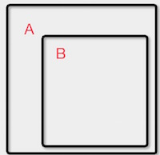
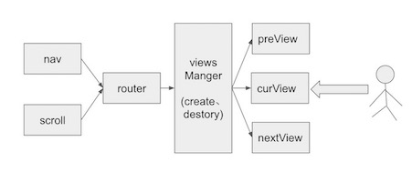

本文主要从项目中使用到的工具，框架等遇到的问题做个总结，至于工具和框架的选型优劣就不过多的做介绍了。
代码编辑器
Sublime,不做介绍,FE都懂。
http协议调试代理工具
Fiddle,Charles(个人比较喜欢，Mac下推荐使用这个)
远程调试工具
weinre,移动开发调试"必备",即时更改样式等， 解放你的右手(不在"alert"定位错误)
省时的浏览器同步测试工具
Browsersync 中文, 内置了weinre, Browsersync能让浏览器实时、快速响应您的文件更改（html、js、css、sass、less等）并自动刷新页面。更重要的是 Browsersync可以同时在PC、平板、手机等设备下进项调试。
框架是个好东西，可以大幅提升开发效率，代码简洁度等，框架本身也并不是完美的，在开发中同样也会引入一些问题，后面会分析碰到的问题。
以下仅仅介绍项目中使用的框架：
被称为简化版的jQuery
模块化, 当然你可以选择其它的，seajs,webPack,commonJs等，其中优劣就不再这里说了，选择适合自己的，没有最好的，只有适合自己的。
看名字就知道了，就是各种滚动，翻页等
Backbone.js为复杂WEB应用程序提供模型(models)、集合(collections)、视图(views)的结构。
Underscore一个JavaScript实用库，提供了一整套函数式编程的实用功能
解决300ms延迟问题。
show: function(){
return this.each(function(){
this.style.display == "none" && (this.style.display = '')
if (getComputedStyle(this, '').getPropertyValue("display") == "none")
this.style.display = defaultDisplay(this.nodeName)
})
}
$.fn.show = function(speed, callback) {
origShow.call(this) //上面的show方法
if (speed === undefined) speed = 0
else this.css('opacity', 0)
return anim(this, speed, 1, '1,1', callback)
}
function defaultDisplay(nodeName) {
var element, display
if (!elementDisplay[nodeName]) {
element = document.createElement(nodeName)
document.body.appendChild(element)
display = getComputedStyle(element, '').getPropertyValue("display")
element.parentNode.removeChild(element)
display == "none" && (display = "block")
elementDisplay[nodeName] = display
}
return elementDisplay[nodeName]
}
发现问题了吗？ 举例：
如果一个半透明的元素hide之后，再次调用show，这时show出来的元素将不再是半透明;
这还算是小事，如果一个元素，你改变了他的默认display属性，如原来是block的自定义成了flex，那么show出来的将会是block，这时很有可能整个页面样式就乱了；
jQuery这一块做的就比较好，他会先保存自定义的display属性，show的时候不会改变自定义的display属性。代码就不贴了，有兴趣的自行看源码吧。
针对上述问题的解决方案如下：
自定义类
.hide {
display: none!important;
}
当需要隐藏的时候addClass('hide'), 显示的时候removeClass('hide')。
查看Zepto的touch事件源码
$(document).on('touchstart', fn)
.on('touchmove', fn)
.on('touchend', fn)
可以看出Zepto将事件代理在了document上, 那么问题来了, 如果有节点事件阻止了冒泡怎么办,当然了这种应用场景比较特殊,
举个场景例子:

我们使用iScroll初始化了两个滚动实例分别是A和B，B实例的DOM节点是B的字节点，要求是滚动B的时候A不动，那么这时候我们就需要在初始化B的时候touchmove事件阻止冒泡，这样在B区域滚动的时候，A区域就不会变化，到这里并没有看出什么问题，但是此时如果B区域中有tap呢，由于Zepto捕获不到touchmove事件，等到touchend的时候，就不能准确的判断出是tap还是swipe事件了，最终结果可想而知。当然你也可以使用绝对定位把B不作为A的字节点，这样就不存在该问题了，html标签结构乱也就算了，苦逼的是这样又带来了新的问题：滚动A的时候，B的滚动怎么处理？
浏览器本身不支持tap事件，tap事件是Zepto在touchend的时候触发的，这样就不存在click事件的300ms的延迟问题了，你以为这样就万事大吉了，我只能说too young too simple；简单的说下300ms的延迟问题，详细的请自行google, 所谓的300ms就是触屏事件判断是单击还是双击而引入的机制，由此引起的问题就是：用户体验不好，还有典型的“点透现象”。 tap事件的确解决了click事件的延迟问题，但是像"a标签, input, select,textarea"等的原生事件的延迟确没有有效的解决，a标签我们可以自己对其写tap事件，但是像input这种复杂的标签就没有那么容易了。
原本我们是可以像a标签那样对其写tap事件，如下
$('input').on('tap',function(){
$(this).focus();
})
上面的代码看着是没有什么问题，点击input标签的时候的，键盘正常弹起，心中一阵窃喜，殊不知写了一段只能凑KPI的代码。看如下zepto源代码：
tapTimeout = setTimeout(function() {
var event = $.Event('tap')
event.cancelTouch = cancelAll
touch.el.trigger(event)
...
}, 0)
官方定义：setTimeout() 方法用于在指定的毫秒数后调用函数或计算表达式。
tap事件被放在了setTimeout中执行，0ms并不是意味着函数立刻执行，
第一：各个浏览器对setTimeout有一个最小的时间值(大概10ms左右，不要纠结这个数字，不同浏览器不一样)，当设置的延迟数小于最小值时，将取最小值；
第二：setTimeout(fn,delay)将fn抛出当前执行队列，delay毫秒后再插入当前队列中执行； 也就说即便是0ms，也要插入到队列末尾去执行了。
看demo 点击tapBtn这个时候focus事件执行，但是键盘没有弹出，当继续点击tapBtn的时候，这时候键盘直接弹出，注册的focus事件反而没有再次执行，好诡异的事情，暂时还没搞明白，如哪位大神知道其中原理，欢迎解答，非常感谢！
总之，tap事件是解决不了input的延迟问题了，针对此问题我们如何解决呢，大多数网站对于input，textarea标签的300ms延迟是没有处理的，从体验上来说，对于300ms的延迟后弹出键盘，大多也都可以接受，不过前面我们还提到过一种“点透”现象，很不幸的是如果其他事件处理了300ms延迟，而刚好input框在点击节点的下面，那么点透现象就发生了demo。
如果不考虑在input框上的滑动，可以在touchend的时候直接focus，事实上有些产品是这么做的。即便考虑滑动，也可以自己写事件判断。如果你知道300ms的延迟，那么你一定知道fastClick.js，它就是为了解决300ms的延迟诞生的。
fastClick不仅解决了click事件的延迟，同样也解决了a, input，textarea等标签的默认事件延迟问题，下面我们来分析下，fastClick是如何做到的。
在这里还要提到一个zepto的tap事件的另一个缺点：PC浏览器(chrome)打开后，如果不切换到移动模拟状态，tap事件是不会响应的，对调试也带来了不便(其实也没什么大问题)。 如果我们使用fastClick，就可以像PC开发那样，直接使用click，其它的事就交给fc去做就好了，如下源代码可以看出，fastClick对此种情况的处理方式。
// Devices that don't support touch don't need FastClick
if (typeof window.ontouchstart === 'undefined') {
return true;
}
再来说正事，fastClick是同样也是在touchend的时候去判断该触发的事件，并且阻止节点的默认事件:
FastClick.prototype.sendClick = function(targetElement, event) {
var clickEvent, touch;
// On some Android devices activeElement needs to be blurred otherwise the synthetic click will have no effect (#24)
if (document.activeElement && document.activeElement !== targetElement) {
document.activeElement.blur();
}
touch = event.changedTouches[0];
clickEvent = document.createEvent('MouseEvents');
clickEvent.initMouseEvent(this.determineEventType(targetElement), true, true, window, 1, touch.screenX, touch.screenY, touch.clientX, touch.clientY, false, false, false, false, 0, null);
clickEvent.forwardedTouchEvent = true;
targetElement.dispatchEvent(clickEvent);
};
fastClick还有一个优点就是，我们可以自己定义代理节点，不像zepto那样，只能代理在document上，而且fastClick还可以通过传参的方式自定义options,更加灵活的满足我们的业务需求：
/**
* Touchmove boundary, beyond which a click will be cancelled.
*/
this.touchBoundary = options.touchBoundary || 10;
/**
* The minimum time between tap(touchstart and touchend) events
*/
this.tapDelay = options.tapDelay || 200;
/**
* The maximum time for a tap
*/
this.tapTimeout = options.tapTimeout || 700;
先说一下使用场景，项目是使用cordova封装成ios应用(iPad),单页面，对于页面的切换有两种方式（点击切换，整屏横向滑动切换）,页面中还有需要横向和竖向的滚动，共用到了如下两种滚动：
在开发第二种滚动时，遇到了一些问题，
手指沿着iPad一侧边缘滑出时（只有一侧，很诡异），没有触发touchend事件，这时滑动了一半的页面就停在那里不动了，刚开始以为是ipad硬件问题，后来试了多款机子，会有同样的问题 （ipad air2，给公司内部销售员工使用的APP，仅要求适配此机型）
解决方法：
尽然监听不到touchend，那就在touchmove的时候做判断了，当手指滑动到边缘时直接执行iScroll的goToPage方法，代码如下
//注意：手指在pad上滑动时touchmove监听到的最大pointX，一侧是1022，一侧是1023，我配置的this.options.iosWebViewWidth = 1020
if(this.iosWebViewBug && this.options.iosWebViewWidth && this.pointX >= this.options.iosWebViewWidth){
this.options.ioswebviewwidth = false;
var time = this.options.snapSpeed || Math.max(
Math.max(
Math.min(Math.abs(this.x - this.startX), 1000),
Math.min(Math.abs(this.y - this.startY), 1000)
), 300);
var fromX = -this.currentPage.pageX * this.wrapperWidth;
var toX = Math.round(this.x);
if(Math.abs(fromX - toX) < 400){
this.directionX = 0;
}
this.goToPage(
this.currentPage.pageX + this.directionX,
this.currentPage.pageY + this.directionY,
time
);
return;
}
连续点击会很容易触发flick事件，会导致页面切换，在flick执行时判断下滑动距离，如果滑动距离小于我们设置的阈值，就不要触发页面切换，如下代码中customThreshold是自定义的阈值：
this.on('flick', function () {
var time = this.options.snapSpeed || Math.max(
Math.max(
Math.min(Math.abs(this.x - this.startX), 1000),
Math.min(Math.abs(this.y - this.startY), 1000)
), 300);
if(this.options.customThreshold){
var fromX = -this.currentPage.pageX * this.wrapperWidth;
var toX = Math.round(this.x);
var temp = fromX - toX;
if(Math.abs(temp) < this.options.customThreshold || this.directionX * temp < 0){
this.directionX = 0;
}
}
this.goToPage(
this.currentPage.pageX + this.directionX,
this.currentPage.pageY + this.directionY,
time
);
});
当然你可以选择其它的类似框架，其它框架是否有类似问题，我不确定，前期调研做的不够充分，这种bug前期也很难发现，等到发现的时候项目已在测试阶段，虽然这一块换用其它框架也不是特别麻烦，但是其它框架未必不会有其它问题引入，再说了自己约的炮，含着泪也要打完😢。
当单个手指滑动时，将其它手指放上滑动区域，再次触发touchstart事件，不要滑动（不要触发touchmove事件），直接移开手指，此时页面就定在离开时的位置。看简化源码：
_start: function (e) {
...
this.moved = false;
...
}
_move: function (e) {
...
this.moved = true;
...
}
_end: function (e) {
...
if ( !this.moved ) {
...
return;
}
...
}
iscroll每次触发touchstart时都会将moved置为false, 当在滑动时放上额外的手指触发touchstart事件，如果过没有touchmove，直接触发touchend，那么页面就被定在了离开时的位置，针对此问题，我们只需要在touchstart时增加如下判断即可：
_start: function (e) {
var tempMoved = this.moved;
...
this.moved = false;
//改变源代码时，加一个配置参数，避免改变源代码而引入其它的问题（如果你研究的透彻可忽略）
if(this.options.customThreshold && e.touches.length > 1){
this.moved = tempMoved;
}
...
}
对于前端性能优化，网上有很多这方面的文章，如css头部，js放尾部，静态资源压缩合并，精灵图，gzip，图片懒加载等，这些基本都已经成标配了，至于代码的优化程度，减少页面重绘和重排，减少获取节点次数以及CSS的规范等，这些就看开发人员的素质了,以上这些我们就不介绍了。前面提到过我们的项目是cordova封装成APP，那么对于静态资源的压缩混淆等并没有像web那么严格，大多数静态资源都是本地文件。对于APP我们最担心的就是闪退的问题，而闪退很大一部分原因是内存泄漏引起，普通网页访问还好，切换url后，之前网页所占的内存会释放，这也是大多网站开发时，不太关注内存的原因，但是我们的项目是单页Web应用（single page web application，SPA），对于内存的释放就不得不考虑了。项目的整体结构如下图： 
导航和滚动改变router，每一个路由都会经过view管理器，在view管理器判断应该生成的和摧毁的view。
注意这里因为我们有滑动切换页面(view)的需求，为了在滑动过程中我们能看到下(上)一页的页面，我们预加载了前后两个view，正常情况下views管理器中应该只有3个view存在，首页和末页有两个view，这不难理解吧，对于像登录页面这种不可以滚动的view，只需要一个view，其它不需要的view都要destory掉。具体的销毁机制，根据业务特点，自己定。Backbone有view.remove方法，帮助我们destory掉当前view，释放当前view所占内存。
view.remove()
Removes a view and its el from the DOM, and calls stopListening to remove any bound events that the view has listenTo'd.
remove: function() {
this._removeElement();
this.stopListening();
return this;
}
但是remove释放的并不彻底, 我们view中还用到了其它第三方的库，如eCharts，iScroll对于他们生成的实例在remove前，要先调用实例对应的destory方法(方法名不一定是这个)。可以使用Chrome的 Heap Profiling排查内存是否泄漏。